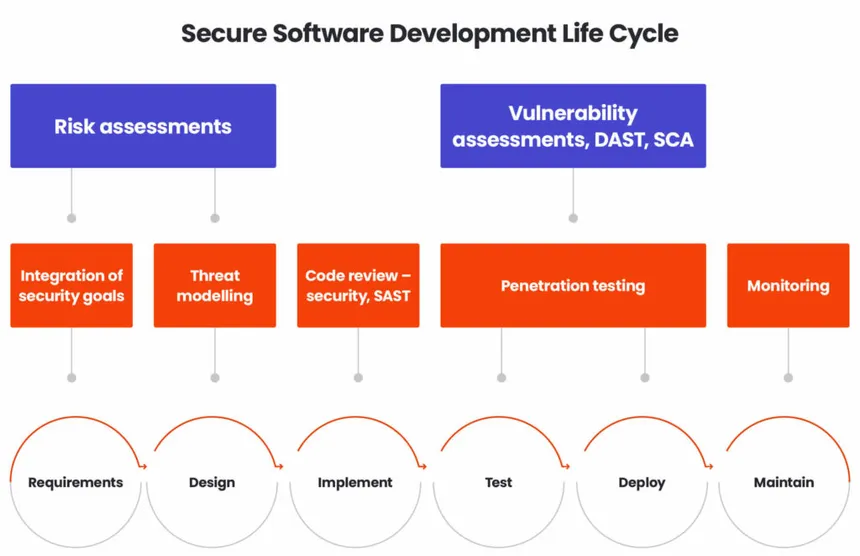
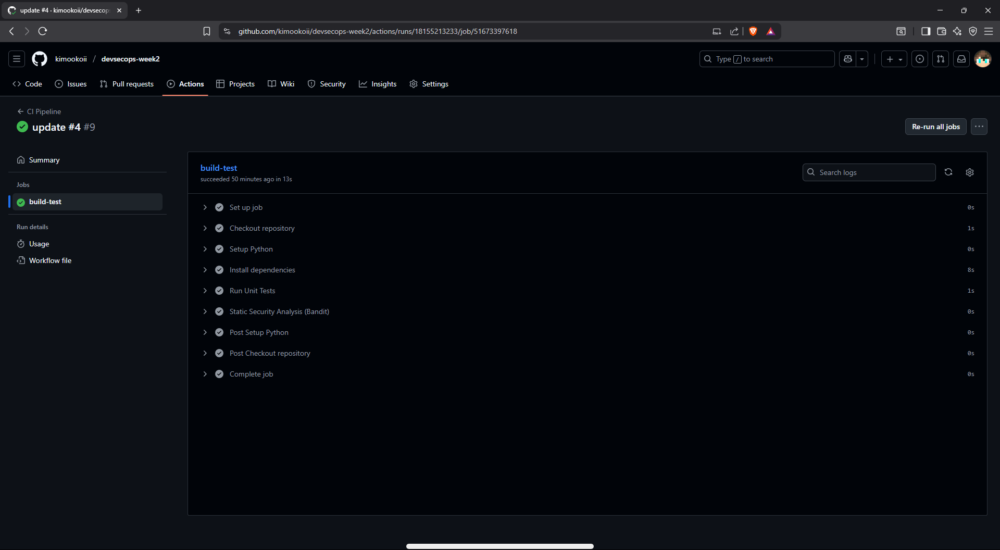
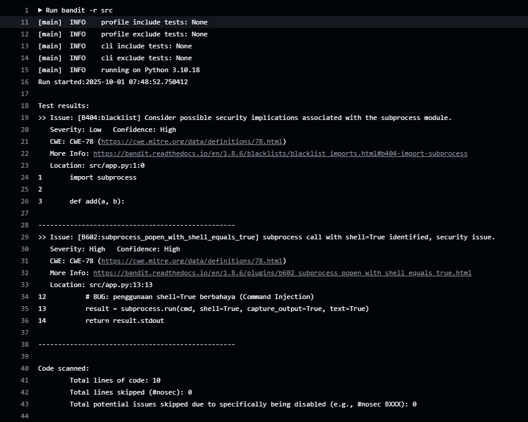
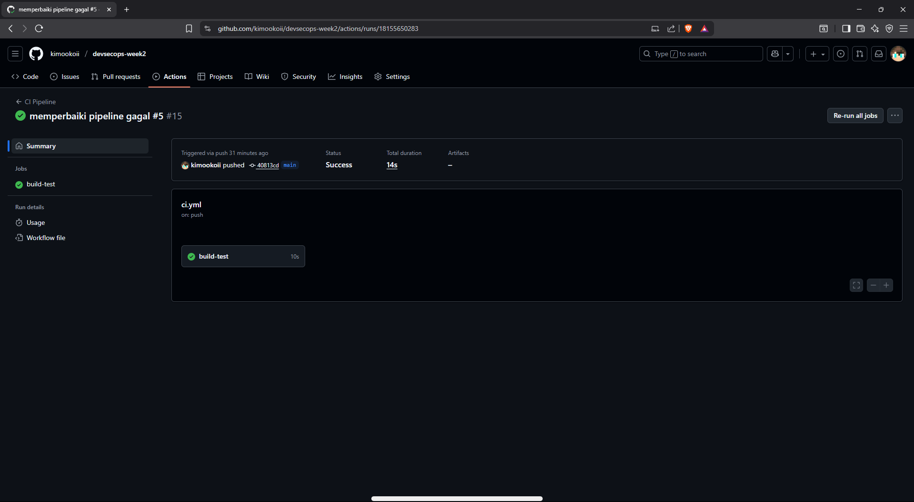

1. Apa itu SSDLC?
Secure Software Development Life Cycle (SSDLC) adalah pendekatan pengembangan perangkat lunak yang menambahkan aspek keamanan ke setiap tahap SDLC tradisional.
Artinya, mulai dari perencanaan, desain, coding, testing, hingga deployment, keamanan selalu diperhatikan. Dengan SSDLC, bug keamanan dapat ditemukan lebih dini sehingga biaya perbaikan menjadi lebih rendah.
2. Pentingnya Testing & Security Scanning di DevSecOps
Dalam praktik DevSecOps, kecepatan pengembangan harus tetap dibarengi dengan keamanan.
- Testing otomatis memastikan fungsi berjalan sesuai ekspektasi setiap kali ada perubahan kode.
- Security scanning (contohnya dengan Bandit untuk Python) membantu mendeteksi potensi kerentanan seperti command injection, SQL injection, dan insecure deserialization.
Dengan pipeline CI/CD yang otomatis, error fungsional dan bug keamanan bisa langsung dideteksi saat developer melakukan push code.
3. Implementasi Workflow di GitHub Actions
Dalam praktik DevSecOps, kecepatan pengembangan harus tetap dibarengi dengan keamanan.
Untuk mengintegrasikan testing dan security scanning, kita dapat menggunakan GitHub Actions dengan workflow sederhana berikut:
Screenshot hasil Actions:

4. Contoh Bug Security yang Ditemukan Bandit
Saat kita menambahkan fungsi menggunakan subprocess.run tanpa kontrol, Bandit mendeteksi potensi bug:
Hasil Bandit:
Screenshot hasil Bug Security:

5. Cara Memperbaikinya
Untuk memperbaiki, kita ganti implementasi run_command dengan whitelist + mapping ke fungsi internal Python. Artinya, hanya perintah yang aman dan telah didefinisikan saja yang bisa dijalankan.
Perbaikan src/app.py:
6. Hasil Pipeline Setelah Perbaikan
- Bandit tidak lagi menemukan bug karena subprocess sudah dihapus.
- Semua test unit lulus ✅.
Screenshot hasil Actions:

Kesimpulan
- SSDLC membantu memasukkan keamanan sejak awal dalam siklus pengembangan.
- GitHub Actions memungkinkan integrasi testing & security scanning otomatis.
- Dengan Bandit, bug keamanan sederhana bisa langsung terdeteksi.
- Perbaikan bug dengan strategi whitelist membuat aplikasi lebih aman dan pipeline hijau kembali.
Implementasi sederhana ini adalah langkah awal untuk membangun praktik DevSecOps yang lebih matang di proyek Python.